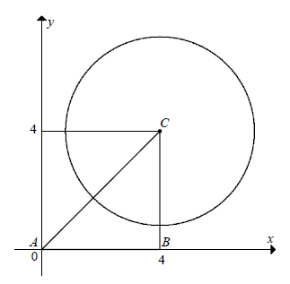
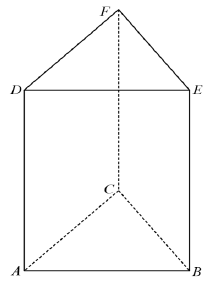

Jesteś tutaj: Matura → Matura rozszerzona - zadania CKE
Matura rozszerzona - zadania CKE
Dane jest równanie kwadratowe \(x^2+kx+2k-3=0\), gdzie \(k\in \mathbb{R} \). Dla
jakich wartości parametru \(k\) to równanie ma dwa różne pierwiastki ujemne?
\(k\in \left (\frac{3}{2}; 2\right )\cup (6;+\infty )\)
Reszta z dzielenia wielomianu \(W(x)\) przez \(x-2\) jest równa \(2\). Oblicz
resztę z dzielenia wielomianu \(W(x-1)\) przez \(x-3\).
\(2\)
Udowodnij, że dla dowolnych liczb rzeczywistych \(x\), \(y\) takich, że \(|x|\ne
|y|\), prawdziwa jest nierówność \(\frac{(x-y)(x^3+y^3)}{(x+y)(x^3-y^3)}\gt \frac{1}{3}\).
Wyznacz wszystkie wartości parametru \(m\), dla których pierwiastkami równania
\((x^2-1)(x^2-m^2)=0\) są cztery kolejne wyrazy ciągu arytmetycznego.
\(m=3\lor m=-3\lor m=\frac{1}{3}\lor m=-\frac{1}{3} \)
Liczba \(\log_49+\log_26\) jest równa
A.\( \log_218 \)
B.\( \log_227 \)
C.\( \log_427 \)
D.\( \log_4108 \)
A
Wykaż, że \(\log_35\cdot \log_49\cdot \log_52=1\)
Liczba \((2^7)^{\log_27}\) jest równa
A.\( 7^1 \)
B.\( 7^2 \)
C.\( 7^7 \)
D.\( 7^{14} \)
C
Iloczyn trzech kolejnych liczb całkowitych jest \(6\) razy większy od kwadratu
najmniejszej z tych liczb powiększonego o \(1\). Wyznacz te liczby.
\(3, 4, 5\)
Liczby rzeczywiste \(a\), \(b\), \(c\) są pierwiastkami wielomianu \(x^3-2x+1\).
Oblicz, ile jest równe \(a^2+b^2+c^2\).
\(4\)
Wyznacz wszystkie wartości parametru \(k\), dla których równanie
\(k^2x-1=x(3k-2)-k\) ma rozwiązanie w zbiorze liczb rzeczywistych.
\(k\ne 2\)
Równanie \(\Bigl||x+3|-4\Bigl|=5\)
A.nie ma rozwiązań rzeczywistych.
B.ma dokładnie dwa rozwiązania rzeczywiste.
C.ma dokładnie trzy rozwiązania rzeczywiste.
D.ma dokładnie cztery rozwiązania rzeczywiste.
B
Rozwiąż równanie \(\Bigl||x-1|-1\Bigl|=|x-2|\)
\(x\ge 1\)
Rozwiąż nierówność \(|2x-2|-|x|\ge x\).
\(x\le \frac{1}{2}\)
Uzasadnij, że dla każdej liczby rzeczywistej \(x\) prawdziwa jest nierówność
\(|x+5|+|x-2|\ge 7\).
Rozwiązaniami nierówności \(|x^2-4|\lt |x-2|\) są wszystkie liczby ze zbioru
A.\( (-2,2) \)
B.\( (-3,-1) \)
C.\( (-\infty ,-2)\cup (2,+\infty ) \)
D.\( (-\infty ,-3)\cup (-1,+\infty ) \)
B
Równanie kwadratowe \(5x^2+4x-3=0\) ma dwa rozwiązania rzeczywiste: \(x_1\) oraz
\(x_2\). Wartość wyrażenia \(\frac{x_1x_2}{x_1+x_2}\) jest równa
A.\( -\frac{4}{5} \)
B.\( \frac{3}{4} \)
C.\( -\frac{5}{3} \)
D.\( \frac{5}{4} \)
B
Równanie kwadratowe \(ax^2+bx+c=0\), gdzie \(c\ne 0\), ma dwa różne pierwiastki,
których suma jest równa ich podwojonemu iloczynowi. Wynika stąd, że
A.\( b=2c \)
B.\( c=2b \)
C.\( b=-2c \)
D.\( 2b=-c \)
C
Określ liczbę rozwiązań równania \(mx^2+mx-1-2m=0\), gdzie \(x\in \langle -2,2
\rangle \), w zależności od wartości parametru \(m\in \mathbb{R} \).
\(0\) rozwiązań dla \(m\in (-\frac{4}{9}, \frac{1}{4})\)
\(1\) rozwiązanie dla \(m\ge \frac{1}{4}\lor m=-\frac{4}{9}\)
\(2\) rozwiązania dla \(m\lt -\frac{4}{9}\)
\(1\) rozwiązanie dla \(m\ge \frac{1}{4}\lor m=-\frac{4}{9}\)
\(2\) rozwiązania dla \(m\lt -\frac{4}{9}\)
Funkcja \(f\), której dziedziną jest zbiór wszystkich liczb rzeczywistych,
określona jest wzorem \(f(x)=(m-1)x^2-2x-m+1\). Wyznacz wszystkie wartości parametru \(m\), dla
których wykres funkcji \(f\) przecina się z prostą o równaniu \(y=-x+1\) w dwóch punktach, których
pierwsze współrzędne mają przeciwne znaki.
\(m\in (-\infty ,0)\cup (1,+\infty )\)
Trójmian \(x^2+bx+c\) ma dwa różne pierwiastki całkowite, oba różne od zera, a suma
jego współczynników \(1+b+c\) jest liczbą pierwszą. Wskaż przykład trójmianu spełniającego warunki
zadania. Uzasadnij, że jednym z pierwiastków tego trójmianu jest liczba \(2\).
Udowodnij, że dla każdej liczby rzeczywistej \(x\) i każdej liczby rzeczywistej
\(m\) prawdziwa jest nierówność \(8x^2-4mx+2m^2\ge 12x+6m-18\)
Wielomian \(f\) jest dany wzorem \(f(x)=x^4+x^3-2x^2+3x-a\). Reszta z dzielenia
wielomianu \(f\) przez dwumian \(x-2\) jest równa \(3\), gdy \(a\) jest równe
A.\( 12 \)
B.\( 17 \)
C.\( 19 \)
D.\( 22 \)
C
Dla pewnej wartości parametru \(m\) reszta z dzielenia wielomianu
\(W(x)=8x^8+6x^6+4x^4+2x^2+m\) przez \(x-2\) jest równa \(2014\). Reszta z dzielenia wielomianu
\(W\) przez \(2x+4\) jest równa
A.\( -2014 \)
B.\( -1007 \)
C.\( 2014 \)
D.\( 4028 \)
C
Wielomian \(W(x)=4x^5+ax^3+bx^2+1\) jest podzielny przez dwumian \(2x+1\), a reszta
z dzielenia tego wielomianu przez dwumian \(x-2\) jest równa \(105\). Wyznacz pierwiastki wielomianu
\(W\).
\(-\frac{1}{2}, \frac{1}{2}, 1\)
Rozwiąż równanie \(3(x+\sqrt{2})=x^3+2\sqrt{2}\).
\(x=-\sqrt{2}\ \) lub \(x=\frac{\sqrt{2}+\sqrt{6}}{2}\) lub \(
x=\frac{\sqrt{2}-\sqrt{6}}{2}\)
Rozwiąż równanie \((x^2-3x)(x^2-3x+2)+1=0\).
\(x=\frac{3-\sqrt{5}}{2}\lor x=\frac{3+\sqrt{5}}{2}\)
Na rysunku poniżej przedstawiono fragment wykresu funkcji liniowej \(f(x)=-2x+2\)
oraz fragment wykresu wielomianu \(w(x)=x^4-6x^3+8x^2+4x-7\). Rozwiąż nierówność \(w(x)\ge f(x)\).
\(x\in (-\infty ,-1\rangle \cup \langle 1,+\infty )\)
Na rysunku przedstawiono fragment wykresu wielomianu
\(W(x)=\frac{1}{2}x^4+\frac{3}{2}x^3-4x^2-6x+8\). Wielomian \(W\) jest podzielny przez dwumian
\(\frac{1}{2}x+2\). Rozwiąż nierówność \(W(x+2)\ge 0\).
\(x\in (-\infty ,-6\rangle \cup \langle -4,-1 \rangle \cup \langle
0,+\infty ) \)
Dane są funkcje \(f(k)=k^3\) oraz \(g(k)=2\cdot f(k)-f(k-2)\), gdzie \(k\in
\mathbb{R} \). Wyznacz wartości \(k\), dla których \(g(k)=80\).
\(k=2\sqrt{3} \lor k=-2\sqrt{3} \lor k=-6\)
Funkcja kwadratowa \(f(x)=ax^2+bx-6\) osiąga najmniejszą wartość równą \(-22\) dla
argumentu \(4\). Liczba \(-3\) jest jednym z rozwiązań równania \(x^3+ax^2+bx-6=0\). Wyznacz
pozostałe rozwiązania tego równania.
\(x=1-\sqrt{3} \lor x=1+\sqrt{3}\)
Funkcja kwadratowa \(f(x)=-x^2+(1-m)x+m+3\) osiąga wartość największą dla tego
samego argumentu, dla którego wartość najmniejszą osiąga funkcja kwadratowa
\(g(x)=-(m+1)x^2+(2m-2)x-4m\). Uzasadnij, że dla dowolnej wartości argumentu prawdziwa jest
nierówność \(f(x)\le g(x)\).
Funkcja \(f\), której dziedziną jest zbiór wszystkich liczb rzeczywistych, jest
określona wzorem \(f(x)=2\sin (-3x)\). Na którym rysunku przedstawiono fragment wykresu funkcji
\(f\)? 
C
Wyznacz, w zależności od całkowitych wartości parametru \(a\gt 0\), liczbę różnych
rozwiązań równania \(\sin (\pi ax)=1\) w przedziale \(\left\langle 0,\frac{1}{a} \right\rangle \).
Wyznacz najmniejszą dodatnią liczbę \(x\) spełniającą warunki: \(\sin x+\sin 3x=0\)
oraz \(\cos \frac{1}{2}x\lt \frac{1}{2}\).
\(x=\pi \)
Dla danej funkcji kwadratowej \(f\) określono funkcje \(g\) i \(h\) wzorami:
\(g(x)=k\cdot f(x)\) oraz \(h(x)=f(kx)\), gdzie \(k\ne 0\). Wyznacz wzór funkcji \(f(x)\), mając
dane wykresy funkcji \(g\) i \(h\). 
\(f(x)=2x^2-2x-12\)
Wykaż, że \[\frac{1+2\cos 88^\circ \cdot \cos 2^\circ }{\cos^22^\circ -\cos
88^\circ \cdot \sin 2^\circ }=\frac{1+\operatorname{tg} 2^\circ }{1-\operatorname{tg} 2^\circ }\]
Na którym z poniższych rysunków jest przedstawiony fragment wykresu funkcji \(f\)
określonej dla każdej liczby rzeczywistej \(x\) wzorem \(f(x)=\sin \left(\frac{2}{3}x\right)\)? 
B
Dane są liczby: \(a=\sin \left(32\frac{1}{3}\cdot \pi \right)\), \(b=\cos
\left(32\frac{1}{3}\cdot \pi \right)\), \(c=\operatorname{tg} \left(32\frac{1}{3}\cdot \pi
\right)\). Wówczas
A.\( a\lt b \)
B.\( a=b \)
C.\( b\lt c \)
D.\( b=c \)
C
Dana jest funkcja \(f(x)=\cos x\) oraz funkcja \(g(x)=f\left(\frac{1}{2}x\right)\).
Rozwiąż graficznie i algebraicznie równanie \(f(x)=g(x)\). 
\(x=\frac{4}{3}k\pi \land k\in \mathbb{Z} \)
Rozwiąż równanie \(\sin 2x+2\sin x+\cos x+1=0\), dla \(x\in \langle -\pi ,\pi
\rangle \).
\(-\frac{5\pi }{6}\), \(-\frac{\pi }{6}\), \(-\pi \), \(\pi \)
Wyznacz wszystkie wartości parametru \(\alpha \in \langle 0;2\pi \rangle \), dla
których równanie \((x^2-\sin 2\alpha )(x-1)=0\) ma trzy rozwiązania.
\(\alpha \in (0;\frac{\pi }{4})\cup (\frac{\pi }{4},\frac{\pi }{2})\cup
(\pi ;\frac{5\pi }{4})\cup (\frac{5\pi }{4};\frac{3\pi }{2})\)
Rozwiąż nierówność \(\cos 2x\lt \cos x\).
\(x\in \left(-\frac{2}{3}\pi +2k\pi,\frac{2}{3}\pi +2k\pi \right) \land
x\ne 2k\pi \)
Wyznacz wszystkie wartości parametru \(a\), dla których równanie \((\cos x+a)\cdot
(\sin^{2} x-a)=0\) ma w przedziale \(\langle 0,2\pi \rangle \) dokładnie trzy różne rozwiązania.
\(a=1\)
Funkcja \(f\), której dziedziną jest zbiór \((1,+\infty )\), jest określona wzorem
\[f(x)=x+1+\frac{x+1}{x}+\frac{x+1}{x^2}+\frac{x+1}{x^3}+...\] Wyznacz wszystkie argumenty, dla
których funkcja \(f\) przyjmuje wartość \(6\).
\(x=2\) oraz \(x=3\)
Ciąg geometryczny \(a_n\) spełnia następujące równanie rekurencyjne: \(a_1=7\),
\(a_{n+2}=\frac{1}{6}a_{n+1}+\frac{1}{3}a_n\) dla \(n\in \{1,2,3,...\}\). Wyznacz sumę wszystkich
wyrazów ciągu \((a_n)\).
\(21\) lub \(\frac{14}{3}\)
Ciągi \((a_n)\) i \((b_n)\) są dane następującymi wzorami: \(a_n=\frac{n^2}{n+1}\),
\(b_n=\frac{3}{4n^2+2n}\) dla każdej dodatniej liczby całkowitej \(n\). Oblicz granicę ciągu
\((c_n)\) takiego, że \(c_n=a_n\cdot b_n\) dla każdej dodatniej liczby całkowitej \(n\).
\(0\)
Oblicz granicę \(\lim_{n \to \infty}
\left(\frac{n^3+3n}{n^2+2}-\frac{n^2+7n}{n+21}\right)\).
\(14\)
Oblicz granicę \(\lim_{n \to \infty}
\left(\frac{n^3-n^2}{n^2+1}-\frac{n^2}{n+3}\right)\).
\(2\)
Pierwszy wyraz \(a_1\) nieskończonego ciągu geometrycznego \((a_n)\) jest równy
\(\sqrt{2}\), natomiast suma pierwszych trzech jego wyrazów jest równa \(\frac{7}{4}\sqrt{2}\).
Szereg nieskończony \(a_1+a_2+a_3+...\) jest zbieżny. Oblicz jego sumę.
\(2\sqrt{2}\)
Dany jest nieskończony ciąg sześcianów. Krawędź pierwszego z nich jest równa
\(x_1\). Krawędź drugiego z tych sześcianów ma długość \(x_2\) równą różnicy długości przekątnej
pierwszego sześcianu i przekątnej ściany pierwszego sześcianu. Analogicznie trzeci sześcian ma
krawędź \(x_3\) o długości równej różnicy długości przekątnej drugiego sześcianu i przekątnej ściany
drugiego sześcianu, itd. Oblicz sumę \(x_1+x_2+x_3+...\).
\(\frac{x_1(2+\sqrt{2}+\sqrt{6})}{4}\)
Trójkąt o boku \(a\) i kącie ostrym \(\alpha \), leżącym naprzeciw tego boku, jest
wpisany w okrąg o promieniu \(R\), zaś trójkąt o boku \(a+1\) i kącie ostrym \(\alpha \), leżącym
naprzeciw tego boku, jest wpisany w okrąg o promieniu \(R+1\). Wyznacz miarę kąta \(\alpha \).
\(\alpha =30^\circ \)
Trójkąt równoramienny \(ABC\) jest wpisany w okrąg o równaniu
\((x-5)^2+(y+3)^2=5\). Podstawą trójkąta \(ABC\) jest odcinek \(AB\) zawarty w prostej o równaniu
\(x-y-7=0\). Oblicz pole trójkąta \(ABC\). Rozważ wszystkie przypadki.
\(\frac{3\sqrt{10}-3}{2}\) lub \(\frac{3\sqrt{10}+3}{2}\)
Dany jest trójkąt \(ABC\) o polu równym \(P\). Odcinki \(IJ\) i \(GH\), których
końce leżą na bokach trójkąta, są równoległe do boku \(AB\) i przecinają wysokość \(CD\) w punktach
\(E\) i \(F\) takich, że \(|CE|=|DF|=\frac{1}{4}\cdot |CD|\) (zobacz rysunek). Pole trapezu \(GHJI\) jest równe
A.\( \frac{1}{2}P \)
B.\( \frac{9}{16}P \)
C.\( \frac{2}{3}P \)
D.\( \frac{3}{4}P \)
A
Z wierzchołków kwadratu poprowadzono do odpowiednich boków proste pod takim samym
kątem \(\alpha \), mniejszym od \(45^\circ \), (zobacz rysunek). Proste te wyznaczają w
szczególności trójkąt (zacieniowany) o polu \(9\) i czworokąt (zacieniowany) o polu \(7\). Wyznacz
pole kwadratu.
\(\frac{200}{3}\)
Wartość wyrażenia \(\sin (2\alpha -\beta )\) jest równa 
A.\( \frac{1}{2} \)
B.\( \frac{\sqrt{2}}{2} \)
C.\( \frac{\sqrt{3}}{2} \)
D.\( 1 \)
C
W trójkącie \(ABC\) są dane \(|AB|=8\), \(|BC|=6\) oraz \(\sin \sphericalangle
ABC=\frac{\sqrt{5}}{3}\). Oblicz stosunek promienia okręgu opisanego na trójkącie \(ABC\) do
promienia okręgu wpisanego w ten trójkąt.
\(\frac{9}{4}\) lub \(\frac{21\sqrt{41}+123}{40}\)
Rysunek przedstawia trapez równoramienny \(ABCD\) opisany na okręgu o środku \(S\)
i promieniu \(r=\frac{\sqrt{91}}{2}\). Dolna podstawa trapezu jest o \(6\) dłuższa od górnej
podstawy. Oblicz obwód trapezu \(ABCD\). 
\(40\)
Czworokąt \(ABCD\) wpisany w okrąg \(S\) spełnia następujące warunki:
\(|BD|=|DC|\), \(|AB|=4\), \(|AC|=6\), \(|AD|=5\). Oblicz długość promienia okręgu \(S\). 
\(\frac{35\sqrt{6}}{24}\)
W trójkąt równoramienny \(ABC\) wpisano kwadrat w taki sposób, że bok \(DE\)
kwadratu zawiera się w podstawie \(AB\) trójkąta, a wierzchołki \(F\) i \(G\) kwadratu leżą
odpowiednio na ramionach \(BC\) i \(AC\) trójkąta (zobacz rysunek).  Pole trójkąta \(CFG\) jest równe sumie pól trójkątów
\(ADG\) i \(BEF\). Oblicz sinus kąta ostrego, pod jakim przecinają się odcinki \(DF\) i \(BG\).
Pole trójkąta \(CFG\) jest równe sumie pól trójkątów
\(ADG\) i \(BEF\). Oblicz sinus kąta ostrego, pod jakim przecinają się odcinki \(DF\) i \(BG\).
Pole trójkąta \(CFG\) jest równe sumie pól trójkątów
\(ADG\) i \(BEF\). Oblicz sinus kąta ostrego, pod jakim przecinają się odcinki \(DF\) i \(BG\).
\(\frac{5\sqrt{26}}{26}\)
W trapez prostokątny \(ABCD\) wpisano okrąg o środku \(O\), który w punkcie \(P\)
jest styczny do dłuższego ramienia \(BC\) tego trapezu (zobacz rysunek). Wykaż, że jeżeli \(|BP|=p\)
i \(|CP|=q\), to obwód trapezu jest równy \(2(\sqrt{p}+\sqrt{q})^2\). 
Na podstawie AB trapezu \(ABCD\) (\(|AB|\gt |CD|\)) wyznaczono taki punkt \(E\), że
czworokąt \(AECD\) jest równoległobokiem. Przekątna \(BD\) przecina odcinki \(CA\) i \(CE\)
odpowiednio w punktach \(F\) i \(G\). Odcinki \(DG\) i \(BF\) są równej długości. Uzasadnij, że
\(\frac{|AB|}{|CD|}=\frac{1+\sqrt{5}}{2}\). 
Na boku \(AB\) trójkąta \(ABC\) obrano punkty \(D\) i \(E\) takie, że
\(|AD|=|EB|=\frac{1}{4}|AB|\) (zobacz rysunek). Udowodnij, że \(|AC|^2+2|CE|^2=|BC|^2+2|CD|^2\).
Okrąg \(o_1\) jest opisany na czworokącie \(ABCD\), natomiast \(o_2\) jest opisany
na czworokącie \(AFEC\) (zobacz rysunek). Punkty \(A\), \(B\), \(E\) są współliniowe i zachodzi
równość \(|\sphericalangle BFE|=|\sphericalangle CDB|\). Udowodnij, że punkty \(F\), \(B\), \(C\) są
współliniowe. 
Zbadaj, czy punkt \((3,-1)\) leży na prostej przechodzącej przez punkt \((1,3)\)
prostopadłej do prostej o równaniu \(\frac{1}{2}x-y+\frac{1}{2}=0\).
tak - leży na prostej
Narysuj w układzie współrzędnych następujące zbiory: \((x+1)^2+(y+1)^2\le 25\) oraz
\(y\ge \frac{1}{7}x+2\frac{5}{7}\) i oblicz pole figury \(F\), która jest częścią wspólną
narysowanych zbiorów.
\(\frac{25}{4}(\pi -2)\)
Okręgi \(o_1\) i \(o_2\) są dane, odpowiednio, równaniami \(x^2+y^2=1\) oraz
\((x-6)^2+(y-3)^2=5\). Środki tych okręgów połączono odcinkiem, który przecina okrąg \(o_1\) w
punkcie \(A\) oraz okrąg \(o_2\) w punkcie \(B\). Wyznacz współrzędne środka odcinka \(AB\).
\(\left(2+\frac{1}{\sqrt{5}},1+\frac{1}{2\sqrt{5}}\right)\)
Dany jest okrąg o równaniu \((x-5)^2+(y-3)^2=9\). Wyznacz równania stycznych do
danego okręgu przechodzących przez początek układu współrzędnych.
\(y=0\) oraz \(y=\frac{15}{8}x\)
Dany jest okrąg \(O_1\) o równaniu \((x-3)^2+y^2=36\) oraz okrąg \(O_2\) o równaniu
\(x^2+(y-m)^2=m^2\). Dla jakich wartości parametru \(m\) okręgi \(O_1\) i \(O_2\) mają dokładnie
jeden punkt wspólny? Dla znalezionych wartości parametru \(m\) wyznacz równanie prostej
przechodzącej przez środki tych okręgów.
dla \(m=\frac{9}{4}\) mamy: \(y=-\frac{3}{4}x+\frac{9}{4}\)
dla \(m=-\frac{9}{4}\) mamy: \(y=\frac{3}{4}x-\frac{9}{4}\)
dla \(m=-\frac{9}{4}\) mamy: \(y=\frac{3}{4}x-\frac{9}{4}\)
Dany jest punkt \(A=(0,0)\). Punkt \(B\), różny od punktu \(A\), należy do okręgu o
równaniu \((x-2)^2+y^2=4\). Wykaż, że środek odcinka \(AB\) należy do okręgu o równaniu
\((x-1)^2+y^2=1\).
Na rysunku jest przedstawiony trójkąt prostokątny \(ABC\), którego wierzchołkami są
punkty \(A=(0,0)\), \(B=(4,0)\) i \(C=(4,4)\) oraz okrąg o środku \(C\), który dzieli trójkąt na
dwie figury o równych polach. Wyznacz równanie tego okręgu. 
\((x-4)^2+(y-4)^2=\frac{32}{\pi }\)
Dany jest trójkąt prostokątny \(KLM\) o kącie prostym przy wierzchołku \(K\),
ograniczony prostymi \(KL: 2x+3y+5=0\), \(LM: 7x+4y-2=0\) oraz prostą \(KM\). Wyznacz równanie
prostej \(KM\), wiedząc, że pole trójkąta \(KLM\) jest równe \(13\).
\(y=\frac{3}{2}x+7\) lub \(y=\frac{3}{2}x-19\)
Dwa boki trójkąta o polu równym \(20\) zawierają się w prostych prostopadłych
\(k:ax+by-4a=0\) oraz \(l: (2b-1)x-ay-8b+4=0\). Trzeci bok tego trójkąta zawiera się w osi \(Oy\).
Wyznacz wszystkie dodatnie wartości parametrów \(a\) i \(b\), dla których spełnione są warunki
zadania.
\(b=1\), \(a=2\lor a=\frac{1}{2}\)
Wykaż, że jeśli prosta o równaniu \(y=kx+l\) jest styczna do okręgu o równaniu
\((x-k)^2+(y-l)^2=m^2\), gdzie \(k,l\in \mathbb{R} \) oraz \(m\gt 0\), to \(\frac{k^4}{k^2+1}=m^2\).
Krawędź podstawy graniastosłupa prawidłowego trójkątnego \(ABCDEF\) (zobacz rysunek
obok) jest równa \(6\). Punkt \(K\) dzieli krawędź boczną \(CF\) w stosunku \(2:3\). Pole przekroju
tego graniastosłupa płaszczyzną przechodzącą przez krawędź podstawy \(AB\) i punkt \(K\) jest równe
\(15\sqrt{3}\). Oblicz objętość tego graniastosłupa. 
\(V=180\) lub \(V=270\)
Dany jest graniastosłup prawidłowy sześciokątny o krawędzi podstawy równej \(4\).
Graniastosłup przecięto płaszczyzną jak na rysunku. Otrzymano w ten sposób przekrój o polu równym
\(48\sqrt{2}\). Oblicz objętość danego graniastosłupa. 
\(96\sqrt{15}\)
Dany jest graniastosłup prawidłowy trójkątny \(ABCDEF\), w którym każda krawędź ma
tę samą długość równą \(a\) (zobacz rysunek). Wykaż, że jeżeli przekrój tego graniastosłupa
płaszczyzną zawierającą krawędź \(AB\) podstawy tego graniastosłupa jest trapezem, to płaszczyzna ta
jest nachylona do płaszczyzny podstawy \(ABC\) graniastosłupa pod takim kątem \(\alpha \), że
\(\operatorname{tg} \alpha \gt \frac{2}{3}\sqrt{3}\).
Dany jest ostrosłup trójkątny \(ABCS\), w którym krawędź boczna \(AS\) jest
jednocześnie wysokością ostrosłupa, a kąt między każdymi dwiema krawędziami bocznymi jest równy
\(60^\circ \). Przez punkt \(D\) leżący na krawędzi \(AS\) poprowadzono płaszczyznę równoległą do
płaszczyzny podstawy \(ABC\). Płaszczyzna ta przecięła krawędzie boczne \(BS\) i \(CS\) w punktach
\(E\) i \(F\) (zobacz rysunek). Pole trójkąta \(ABC\) jest równe \(P_1\), a pole trójkąta \(DEF\)
jest równe \(P_2\). Oblicz odległość między płaszczyznami \(ABC\) i \(DEF\). 
\(\frac{\sqrt{P_1}-\sqrt{P_2}}{\sqrt[4]{2}}\)
Punkt \(S\) jest wierzchołkiem ostrosłupa prawidłowego czworokątnego, a punkty
\(E\), \(F\) są odpowiednio środkami krawędzi \(AB\) i \(CD\) jego podstawy. Krawędź podstawy i
wysokość tego ostrosłupa mają taką samą długość równą \(1\). Płaszczyzna przechodząca przez punkty
\(E\) i \(F\) przecina krawędzie boczne odpowiednio w punktach \(G\) oraz \(H\) (zobacz rysunek).
Oblicz pole otrzymanego przekroju, wiedząc, że jest ono dwa razy większe od pola czworokąta
\(BCGH\). 
\(\frac{9\sqrt{5}}{50}\)
Zdarzenia losowe \(A\), \(B\), \(C\) zawarte w \(\Omega \) są takie, że \(C\subset
A\), \(P(C)\gt 0\) i \(P(A'\cap B)>0\). Wykaż, że \(P(C|A)\gt P(C|A\cup B)\).
Doświadczenie losowe polega na tym, że losujemy jednocześnie trzy liczby ze zbioru
\(\{1,2,3,4,5,6,7,8,9\}\). Oblicz prawdopodobieństwo warunkowe, że wśród wylosowanych liczb będzie
liczba \(4\), pod warunkiem, że suma wylosowanych liczb będzie parzysta. Wynik przedstaw w postaci
ułamka zwykłego nieskracalnego.
\(\frac{13}{44}\)
Cztery kule ponumerowano kolejnymi liczbami od \(1\) do \(4\). Ustawiamy te kule
losowo w szereg i zapisujemy liczbę, której kolejnymi cyframi są numery na kulach.
Prawdopodobieństwo, że zapisana liczba nie jest podzielna przez \(4\), jest równe
A.\( \frac{6}{4^4} \)
B.\( \frac{18}{4^4} \)
C.\( \frac{6}{4!} \)
D.\( \frac{18}{4!} \)
D
Liczby \(x\), \(y\), \(z\) należą do zbioru \(\{1,2,3,...,100\}\). Liczba
uporządkowanych trójek liczb \((x, y, z)\) spełniających warunek: liczba \(x^2+y^2+z^2\) jest
podzielna przez \(3\), jest równa
A.\( \binom{33}{3}+\binom{67}{3} \)
B.\( \binom{33}{3}+\binom{33}{3}+\binom{33}{4} \)
C.\( 33^3+67^3 \)
D.\( 33^3+33^3+67^3 \)
C
Oblicz, ile jest trzycyfrowych liczb całkowitych dodatnich, w których zapisie
dziesiętnym występują dokładnie dwie różne cyfry.
\(9\cdot 9\cdot 3=243\)
Zbiór \(A=\{1,2,3,...,2n-1,2n\}\), gdzie \(n\ge 4\), jest złożony z \(2n\)
kolejnych liczb naturalnych. Rozpatrujemy wszystkie czteroelementowe podzbiory zbioru \(A\). Przez
\(x\) oznaczmy liczbę podzbiorów, których suma wszystkich elementów jest parzysta, a przez \(y\)
oznaczmy liczbę podzbiorów, których suma wszystkich elementów jest nieparzysta. Wykaż, że
\(x-y=\binom{n}{2} \).
Na wspólnym zebraniu klas IIIA i IIIB postanowiono wylosować dwie osoby, które będą
kierowały przygotowaniami do studniówki. Każda z tych dwóch klas liczy \(20\) osób; w IIIA jest
\(6\) dziewcząt, w klasie IIIB jest dziewcząt \(12\). Jakie jest prawdopodobieństwo, że obie
wylosowane osoby są dziewczętami, jeśli obie pochodzą z tej samej klasy?
\(\frac{81}{380}\)
Doświadczenie losowe polega na dwóch rzutach symetryczną sześcienną kostką do gry.
Oblicz prawdopodobieństwo, że wartość bezwzględna różnicy wyrzuconych liczb będzie większa od \(2\),
jeżeli wiadomo, że suma kwadratów tych liczb przy dzieleniu przez \(4\) daje resztę \(1\).
\(\frac{4}{9}\)
Zdarzenia losowe \(A\), \(B\) zawarte w \(\Omega \) są takie, że \(P(B)\gt 0\) i
prawdopodobieństwo warunkowe \(P(A|B)=0{,}386\). Oblicz \(\frac{P(A'\cap B)}{P(B)}\). Zakoduj trzy
pierwsze cyfry po przecinku skończonego rozwinięcia dziesiętnego otrzymanego wyniku.
\(0{,}614\)
Zdarzenia losowe \(A\), \(B\) zawarte w \(\Omega \) są takie, że \(P(A\cup
B)=0{,}9\); \(P(A\cap B')=0{,}2\); \(P(A'\cap B)=0{,}4\). Oblicz prawdopodobieństwo warunkowe
\(P(A|B)\).
\(\frac{3}{7}\)
Funkcja \(f(x)=2x^3-\frac{1}{2}x+1\) jest malejąca w przedziale
A.\( \left(-\infty ; -\frac{\sqrt{3}}{6}\right\rangle \)
B.\( (-\infty ; 0\rangle \)
C.\( \left\langle -\frac{\sqrt{3}}{6}; \frac{\sqrt{3}}{6}\right\rangle \)
D.\( \left\langle \frac{\sqrt{3}}{6}; +\infty \right ) \)
C
Wśród wszystkich graniastosłupów prawidłowych trójkątnych, w których suma długości
wszystkich krawędzi jest równa \(12\), jest taki, który ma największą objętość. Oblicz długości
krawędzi tego graniastosłupa i jego objętość.
\(\frac{16\sqrt{3}}{27}\)
Funkcja \(f(x)=12x-x^3\) jest określona dla wszystkich liczb rzeczywistych. W
przedziale \(\langle -1,1\rangle \) funkcja \(f\)
A.jest rosnąca.
B.jest malejąca.
C.ma dokładnie jedno ekstremum lokalne.
D.ma dokładnie dwa ekstrema lokalne.
A
Granica \(\lim_{x \to -\infty} \frac{(2x+1)^4-(2x+3)^4}{(x+3)^3-(3x-1)^3}\) jest
równa
A.\( 0 \)
B.\( \frac{1}{3} \)
C.\( \frac{32}{13} \)
D.\( +\infty \)
C
Oblicz granicę \(\lim_{x \to 2} \frac{x^2-4}{x^2+4x-12}\).
\(\frac{1}{2}\)
Jeśli \(a\ne 0\), granica \(\lim_{x \to \infty}
\frac{2(ax)^2+(bx)^2}{(ax)^2-(bx)^2} \) jest równa \(2\) dla parametru \(b\) równego
A.\( -1 \)
B.\( 0 \)
C.\( 1 \)
D.\( 2 \)
B
Funkcja \(f\), której dziedziną jest zbiór wszystkich liczb rzeczywistych, jest
określona wzorem \(f(x)=-2x^3+3x^2\). Funkcja \(f\) jest rosnąca w przedziale
A.\( (-\infty ;0\rangle \)
B.\( \langle 0;1\rangle \)
C.\( \left\langle 1;\frac{3}{2} \right\rangle \)
D.\( \left\langle \frac{3}{2};+\infty \right) \)
B
Funkcja \(f(x)=\frac{1}{3}x^3-4x+2\) ma maksimum w punkcie
A.\( x=-2 \)
B.\( x=0 \)
C.\( x=2 \)
D.\( x=4 \)
A
Rozważmy wszystkie ostrosłupy prawidłowe sześciokątne, w których suma długości
krótszej przekątnej podstawy i wysokości ostrosłupa jest równa \(9\). Wyznacz długość krawędzi
podstawy tego z rozważanych ostrosłupów, którego objętość jest największa. Oblicz tę największą
objętość.
\(V_{max}(2\sqrt{3})=18\sqrt{3}\)
Wykaż, że równanie \(2x^3-3x^2-5=0\) ma w przedziale \((2,3)\) dokładnie jedno
rozwiązanie.
Wielomian \(f\) jest dany wzorem \(f(x)=3x^4-4kx^3+6x^2-12kx\) z parametrem
rzeczywistym \(k\). Wyznacz wszystkie wartości \(k\), dla których funkcja \(f\) jest rosnąca w
przedziale \(\langle 2;+\infty )\) i nie jest rosnąca w żadnym przedziale postaci \(\langle
a;+\infty )\) dla \(a\lt 2\).
\(k=2\)
Funkcja wymierna \(f\) jest dana wzorem \(f(x)=\frac{x+1}{x^2+2x+2}\). Wyznacz
wartość najmniejszą i wartość największą, jakie ta funkcja przyjmuje dla argumentów z przedziału
\(\langle -3,1 \rangle \)
\(-\frac{1}{2}\), \(\frac{1}{2}\)